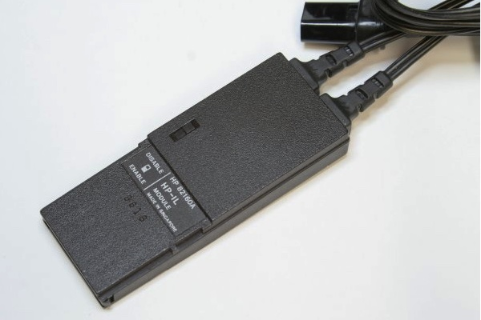

While the HP 82160A HP-IL Module is plugged into the calculator, the following functions
are available for your use. All functions are programmable except as noted below.
Appropriate peripherals must be connected to the Hewlett-Packard Interface Loop for
the functions to be executed normally.
Calculator flags indicated below determine how the interface module performs certain
operations. When a flag is set, operations are performed as described.
Printer Operations
Functions marked with * are for the HP82162A Thermal Printer only.
| ACA | Accumulates the ALPHA register into the print buffer. |
|---|---|
| ACCHR | Accumulates a character into the print buffer. Uses X-register. |
| ACCOL * | Accumulates a specified column of dots into the print buffer. Uses X-register. |
| ACSPEC * | Accumulates a special character into the print buffer. The character is defined by using BLDSPEC. Uses X-register. |
| ACX | Accumulates the X-register contents into the print buffer. |
| ADV | Advances the printer paper and prints the print buffer right-justified. |
| BLDSPEC | Executed up to seven times, builds a special character using specified columns of dots. Accumulate using ACSPEC or store in a register. Uses X- and Y-registers. |
| FMT * | Accumulates a format specifier into the print buffer. Leading or trailing specifier centers output; internal specifier prints left- and right-justified. |
| LIST | Lists specified program lines. Not programmable. |
| PRA | Prints the ALPHA register left-justified. |
| PRAXIS * | Prints and labels a y-axis. Uses R00, R01, R02 (column width), R04. |
| PRBUF | Prints the print buffer left-justified. |
| PRFLAGS | Prints flag status and other calculator information. |
| PRKEYS | Prints a list of currently reassigned keys. |
| PRPLOT | Plots a function interactively. Prompts for parameters and stores data in R00 through R11. |
| PRPLOTP * | Plots a function noninteractively. Uses R00 through R11: R00 (Y MIN), R01 (Y MAX), R03 (optional plot symbol), R04 (AXIS), R08 (X MIN), R09 (X MAX), R10 (X INC), R11 (NAME). R06 contains x value. |
| PRREG | Prints the contents of all storage registers. |
| PRREGX | Prints the contents of registers specified by X (bbb.eee). |
| PRΣ | Prints the contents of the statistics registers. |
| PRSTK | Prints the contents of the X-, Y-, Z-, and T-registers. |
| PRX | Prints the contents of the X-register. |
| REGPLOT * | Plots a single function value (from X-register). Uses R00, R01, R02 (nnn.aaa), R03. |
| SKPCHR * | Accumulates skipped characters into the print buffer Uses X-register. |
| SKPCOL * | Accumulates skipped dot columns into the print buffer. Uses X-register. |
| STKPLOT | Plots a single function value using X (nnn.aaa), Y (Y MAX), Z (Y MIN), T (y value). |
Printer Flags
| Flag 12: | Double Wide Prints and accumulates characters double width. |
|||||||||||||||
|---|---|---|---|---|---|---|---|---|---|---|---|---|---|---|---|---|
| Flag 13: | Lowercase Prints and accumulates characters in lowercase. |
|||||||||||||||
| Flag 21: | Printer Enable Performs printer operations normally in programs. VIEW and AVIEW print and do not halt program execution. (Automatically set when flag 55 is set.) |
|||||||||||||||
| Flag 55: | Printer Existence Indicates a printer is connected to the system. (Automatically set when printer is first detected.) |
|||||||||||||||
| Flags 15 and 16: Print Mode (not used for HP 82162A Thermal Printer) | ||||||||||||||||
|
Mass Storage Operations
| CREATE | Creates a new data file with specified number of registers and filled with zero values. Uses ALPHA and X-registers. |
|---|---|
| DIR | Displays (and prints) a directory of stored files. Indicates file type: PR (program), DA (data), KE (key assignment), ST (status), and WA ("write-all"). Indicates file options: A (automatic), P (private), and S (secure). |
| NEWM | Prepares a new medium for storing files. Prompts for number of files in directory space. Not programmable. |
| PURGE | Removes a file from the medium. Uses ALPHA register. |
| READA | Reads a "write-all" file and sets the calculator accordingly. Uses ALPHA register. |
| READK | Reads a key-assignment file and reassigns keys accordingly. Uses ALPHA register. |
| READP | Copies a program file into program memory, replacing the last program in memory. Executed in USER mode, program key assignments become active also. Uses ALPHA register. |
| READR | Copies a data file into the calculator's registers until all file registers copied or all storage registers filled. Uses ALPHA register. |
| READRX | Copies part of a data file into registers specified by X (bbb.eee). Starts at current register in data file. |
| READS | Reads a status file and sets the calculator status. Pending program returns are lost. Uses ALPHA register. |
| READSUB | Copies a program file into program memory, placing it after the last program in memory. Executed in USER mode, program key assignments become active also. Uses ALPHA register. |
| RENAME | PRenames a stored file. Uses ALPHA register. |
| SEC | Makes a stored file secured against being erased, renamed, or altered. Uses ALPHA register. |
| SEEKR | Positions the medium to a specified data file and register. Uses ALPHA and X-registers. |
| UNSEC | Makes a stored file not secured. Uses ALPHA register. |
| VERIFY | Verifies that a stored file can be read. Uses ALPHA register. |
| WRTA | Stores a "write-all" file onto the medium. Uses ALPHA register. |
| WRTX | Stores key assignments of system functions onto the medium. Uses ALPHA register. |
| WRTP | Stores a program and its key assignments onto the medium. Uses ALPHA register. |
| WRTPV | Stores a program and its key assignments onto medium and makes the file private. Uses ALPHA register. |
| WRTR | Copies all storage resisters into a data file. Uses ALPHA register. |
| WRTRX | Copies some storage registers into a data file as specified by X (bbb.eee). Starts at current register in data file. |
| WRTS | Stores calculator status onto the medium. Uses ALPHA register. |
| ZERO | Fills a data file with zero values. Uses ALPHA register. |
Mass Storage Flags
| Flag 11: | Automatic Program Execution Used with WRTP, WRTPV or WRTA, sets a program for automatic execution when copied back into the calculator from the keyboard. (For WRTA, execution set to start at current position in program memory.) |
|---|
Interface Control Operations
| AUTOIO | Sets the interface to Auto mode. |
|---|---|
| FINDID | Finds the address of a specified device type and places the address in X. If the device is not found, zero is returned. Uses ALPHA register. |
| INA | Inputs an ALPHA string of up to 24 characters from primary device. |
| IND | Inputs a decimal number from primary device. |
| INSTAT | Inputs status information from pri- mary device, sets or clears flags 00 through 07 accordingly, and places decimal status number in X. |
| LISTEN | Sets a device as a listener, or removes all listeners for X = 31. Uses X-register. |
| LOCAL | Sets primary device to its local operating mode. |
| MANIO | Sets the interface to Manual mode. |
| OUTA | Outputs an ALPHA string to primary device. Uses ALPHA register. |
| PWRDN | Sets all devices to their low power state. |
| PWRUP | Sets all devices to their operating power state. |
| REMOTE | Sets primary device to its remote operating mode. |
| SELECT | Selects a device as the primary device. Uses X-register. |
| STOPIO | Stops I/O communication in the loop. |
| TRIGGER | Triggers all devices set to respond (listeners). |
Interface Control Flags
| Flags 00 through 07: Device Status | |
|---|---|
| When set by INSTAT, indicate that corresponding status bits of a device are 1's. | |
| Flag 17: | Suppress End-of-Line End-of-line indicator is not used. OUTA does not send CR and LF. INA ignores CR and LF. |
| Flag 32 | Manual Mode Indicates interface is in Manual mode. |